I am Mohit Agrawal, Head of AI at i3 Digital Health, where I work on designing and developing AI-driven solutions for healthcare, with a focus on oncology. Alongside my industry role, I am pursuing a PhD at IIT Kharagpur under the supervision of Dr. Pawan Goyal. My industry work and academic research are closely connected, with each informing and strengthening the other.
I am an AI generalist interested in applying Data and Artificial Intelligence to meaningful societal challenges. My interests span domains such as healthcare and education, where thoughtful applications of data and intelligent systems can improve access, decision-making, and the quality of human experiences. I believe the value of AI lies not only in advancing technology, but also in applying it responsibly to problems that matter.
In healthcare, my work focuses on exploring how multimodal AI can help make complex oncology data more useful and actionable. In parallel, my PhD research explores the intersection of Multimodal AI, Speech Technologies, and Education — developing intelligent systems that can listen, speak, and meaningfully evaluate human learning. This work includes Automatic Speech Recognition (ASR), Text-to-Speech (TTS), and the evaluation of multimodal AI systems.
Across these domains, I am particularly interested in making AI more accessible, efficient, and inclusive. I explore Small Language Models (SLMs), efficient AI architectures, and on-device intelligence to bring capable AI systems beyond expensive cloud infrastructure and directly to edge devices. This is especially important in resource-constrained settings, where reliable technology and limited or no internet connectivity should not become barriers to quality healthcare or education.
Earlier in my research journey, I also worked on privacy and security, with contributions in behavioral biometrics and the development of techniques for detecting spam and harmful activity in social networks. These experiences strengthened my interest in building intelligent systems that are not only useful and efficient, but also secure, trustworthy, and respectful of users.
My engineering and research journey has taken me through Qualcomm AI Software, Teradata R&D Labs, IBM ISDL, Blaize, and IIIT Delhi, where I worked as a Research Assistant under Prof. Rajiv Ratn Shah, contributing to research in behavioral biometrics, privacy, and fairness. After beginning doctoral studies at the National University of Singapore, the disruption caused by the COVID-19 pandemic brought me back to India. My subsequent research experience at IIIT Delhi rekindled my passion for research and motivated me to pursue doctoral studies at IIT Kharagpur. These experiences shaped my approach to building AI that moves beyond research prototypes into practical, scalable, and resource-efficient systems.
I hold a Master's degree in Computer Science and Engineering from National Institute of Technology Tiruchirappalli (2016), where I worked under the guidance of Dr. R. Leela Velusamy. My thesis was titled "Spam Detection in Social Networking Sites Using Unsupervised Learning and Dimensionality Reduction." I completed my Bachelor's degree in Computer Science and Engineering at Government College of Engineering, Bhawanipatna (2013).
Beyond technology and research, I enjoy teaching, writing, and travelling. These interests keep me curious, broaden my perspective, and reinforce my belief that technology should ultimately serve people. I am always keen to connect with those using Data and AI to address real-world challenges, particularly across healthcare, education, and other areas of social impact.
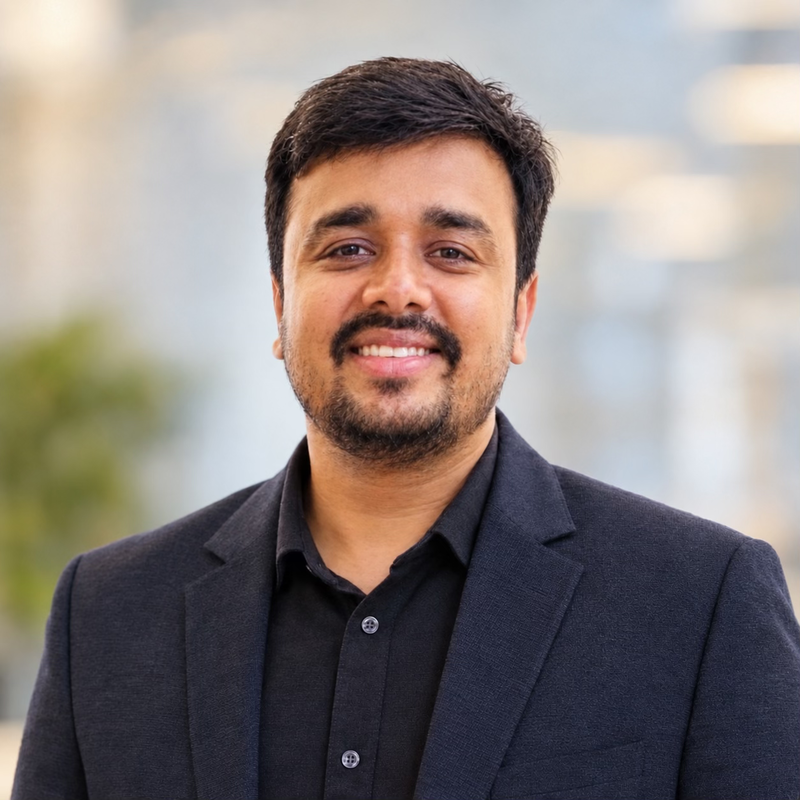
Mohit Agrawal
Data & AI for Social Impact
I am an AI researcher and technology leader interested in applying Data and AI to address meaningful societal challenges, particularly in healthcare and education. I currently serve as Head of AI at i3 Digital Health, where I work on AI-driven solutions in oncology.
I am also pursuing my PhD at IIT Kharagpur under the guidance of Dr. Pawan Goyal. My research interests include multimodal AI, speech technologies, and AI evaluation, with a focus on building systems that are useful, reliable, and accessible.
My research journey began during my Master's at NIT Tiruchirappalli, where I worked on spam detection in social networking sites. Later, I worked as a Research Assistant with Prof. Rajiv Ratn Shah at IIIT Delhi, exploring behavioral biometrics and fairness. After returning to India from Singapore during the COVID-19 disruption, this experience renewed my interest in research and motivated me to pursue a PhD.
Before focusing more deeply on research, I gained industry experience with organizations including Qualcomm, Teradata, IBM, and Blaize. These experiences shaped my interest in bridging practical engineering with impactful AI research.
Professional Experience
Leading AI initiatives focused on developing intelligent solutions for oncology and healthcare applications.
Worked on AI and technology-related engineering initiatives.
Worked on data and technology solutions in an industry setting.
Contributed to software and technology projects.
Worked in the AI and computing technology ecosystem.
Research & Academic Experience
Research interests include multimodal AI, speech technologies, automatic speech recognition, text-to-speech, and AI evaluation.
Worked with Prof. Rajiv Ratn Shah on research problems involving behavioral biometrics and fairness.
Worked on spam detection in social networking sites, developing an early interest in machine learning and research.
News
- Nov 2026 Presented a poster at IndoML.
- Dec 2025 Received a US patent.
- Dec 2024 Received a white paper award.
Selected Publications
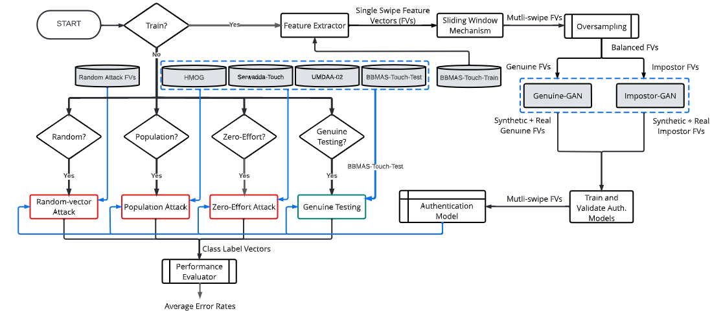
Publication 1
Research publication. Replace this placeholder with the exact title, authors, venue, and publication link.
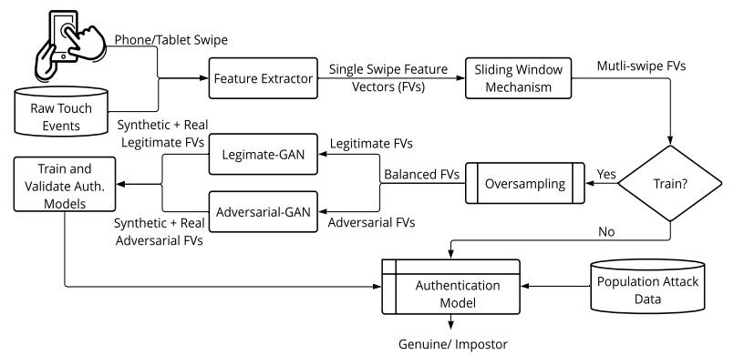
Publication 2
Research publication. Replace this placeholder with the exact title, authors, venue, and publication link.
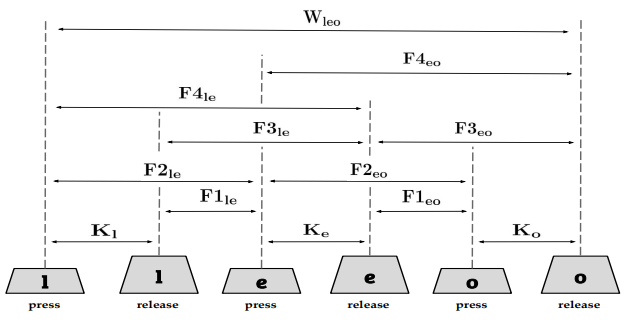
Publication 3
Research publication. Replace this placeholder with the exact title, authors, venue, and publication link.
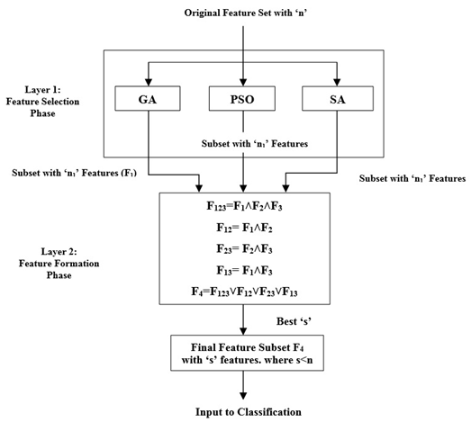
Publication 4
Research publication. Replace this placeholder with the exact title, authors, venue, and publication link.

Publication 5
Research publication. Replace this placeholder with the exact title, authors, venue, and publication link.
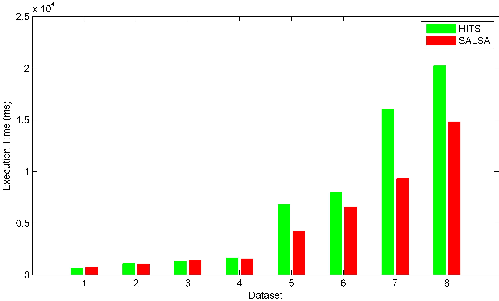
Publication 6
Research publication. Replace this placeholder with the exact title, authors, venue, and publication link.
Leading AI efforts focused on developing practical, data-driven solutions in healthcare, with an emphasis on oncology.
Worked across AI software, research and development, and efficient computing. These experiences helped connect applied research with engineering and real-world deployment.
Research at the intersection of Multimodal AI, Speech Technologies and Education, including speech recognition, text-to-speech, and evaluation of multimodal AI systems. Working under the supervision of Dr. Pawan Goyal.
Worked on behavioral biometrics, privacy, and fairness. This experience renewed and deepened my interest in research, and became an important step toward pursuing doctoral studies.
Worked on spam detection in social networking sites, focusing on unsupervised learning and dimensionality reduction under the guidance of Dr. R. Leela Velusamy. This work led to research on social-network spam detection.
My research path has evolved from detecting spam and harmful activity in online social networks, to studying behavioral biometrics, privacy and fairness, and now to multimodal AI for education. The common thread is using intelligent systems to address meaningful human and societal problems.
- Nov 2026 Poster accepted at IndoML in the area of AI for Education.
- Dec 2025 US Patent accepted for filing in the area of Autonomous Driving.
- Dec 2024 "Machine Unlearning for Qualcomm AI Hub" white paper received award at MMWPC 2024.
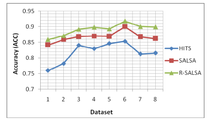
- Received Orion Award for best performance at Qualcomm (2023).
- Top 10 best reviewed papers — IEEE IJCB (2021).
- 8th place out of 87 teams in MLBuzz Advanced Level Hackathon — Qualcomm (2021).
- Received admission offer from NUS Singapore for a fully funded PhD — School of Computing, NUS (2020).
- MHRD Scholarship to pursue Master's in CSE based on GATE — MHRD (2014).
- Department Rank 1 out of 60 students in B.Tech — Government College of Engineering, Bhawanipatna (2013).
- Best Paper Award — NIT Rourkela (2012).
- Vikas Pratibha Award — National Talent Search Examination (2007).
- Technical talk on "Application of AI on Cyber Security" — NFSU, New Delhi.
- Technical talk on "Jargons of Machine Learning" — VIT Vellore, organized by the ECE Department.
- Guest Speaker — Indian Naval Academy, Ezhimala, Kannur, Kerala.
- Technical talk on "The Alchemy of Data in AI" — NIT Trichy, organized by IEEE Student Branch.
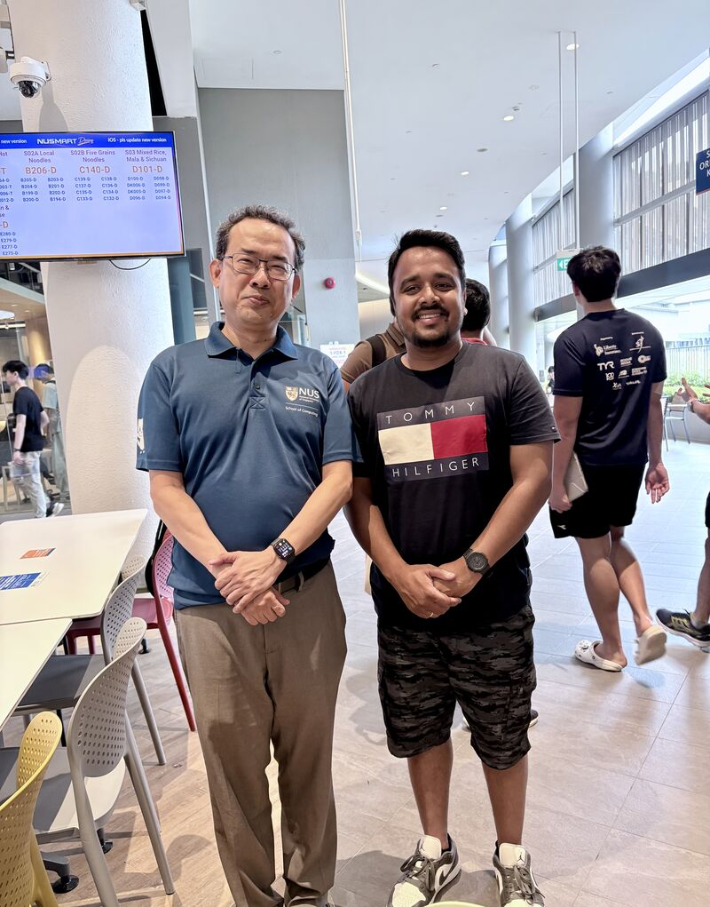
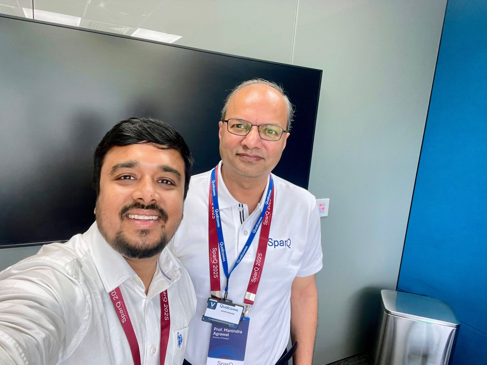
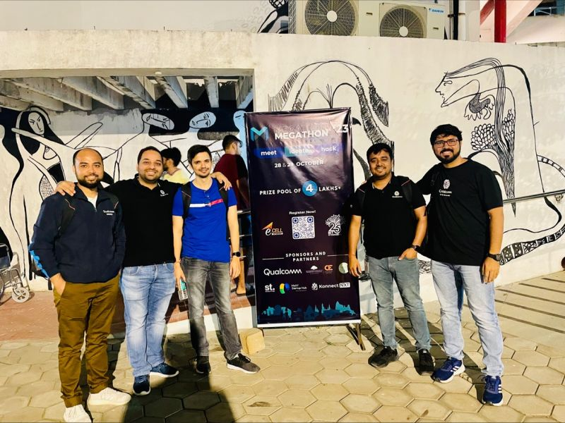
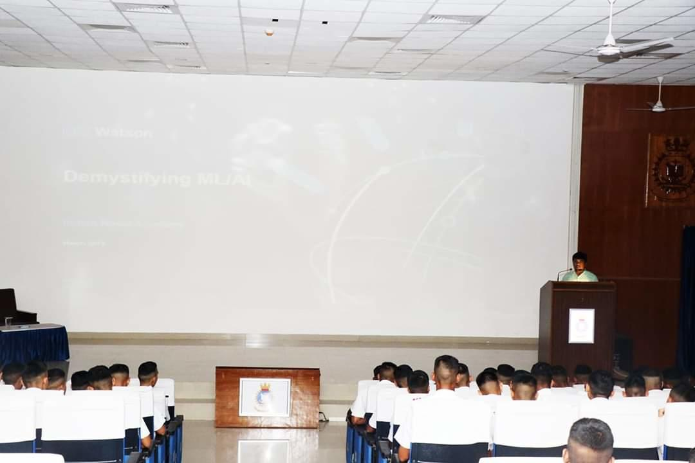
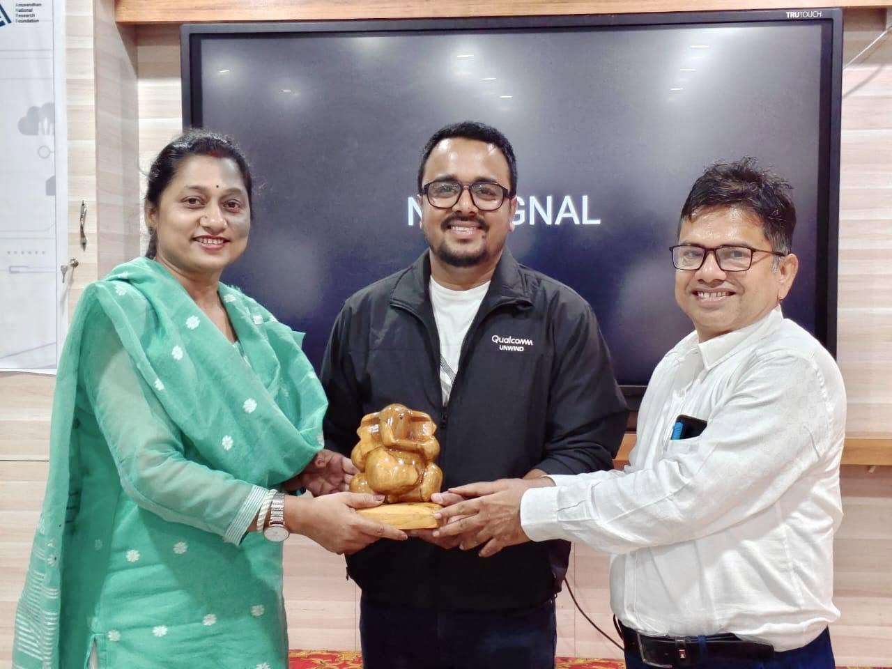
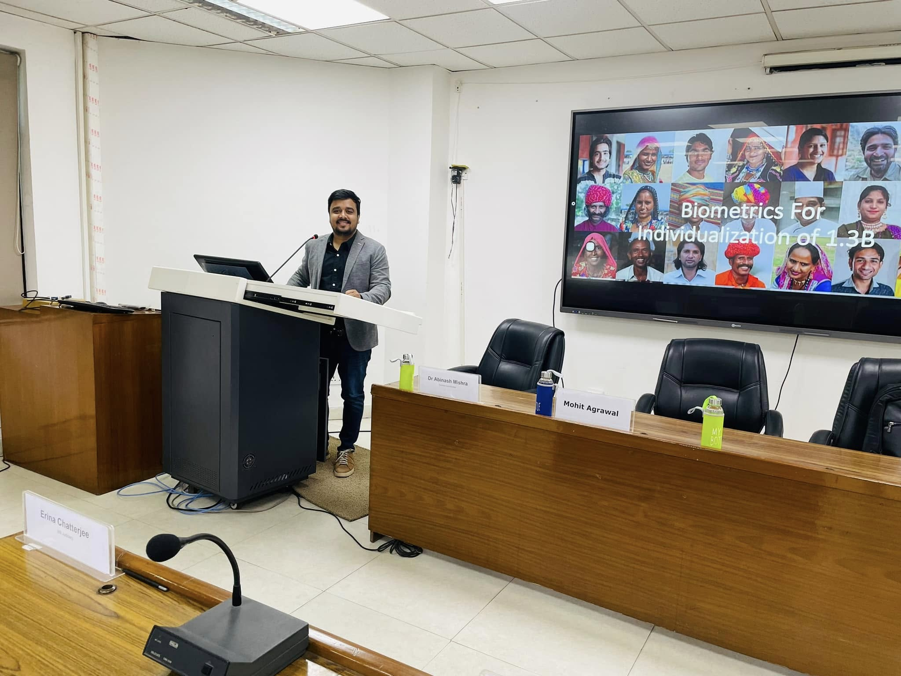
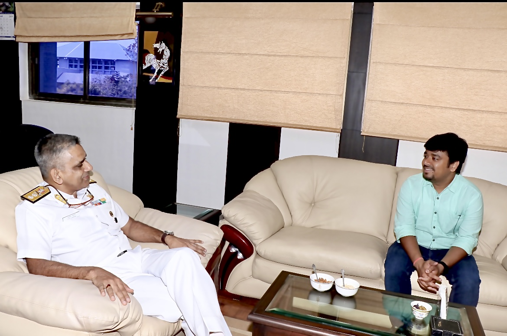
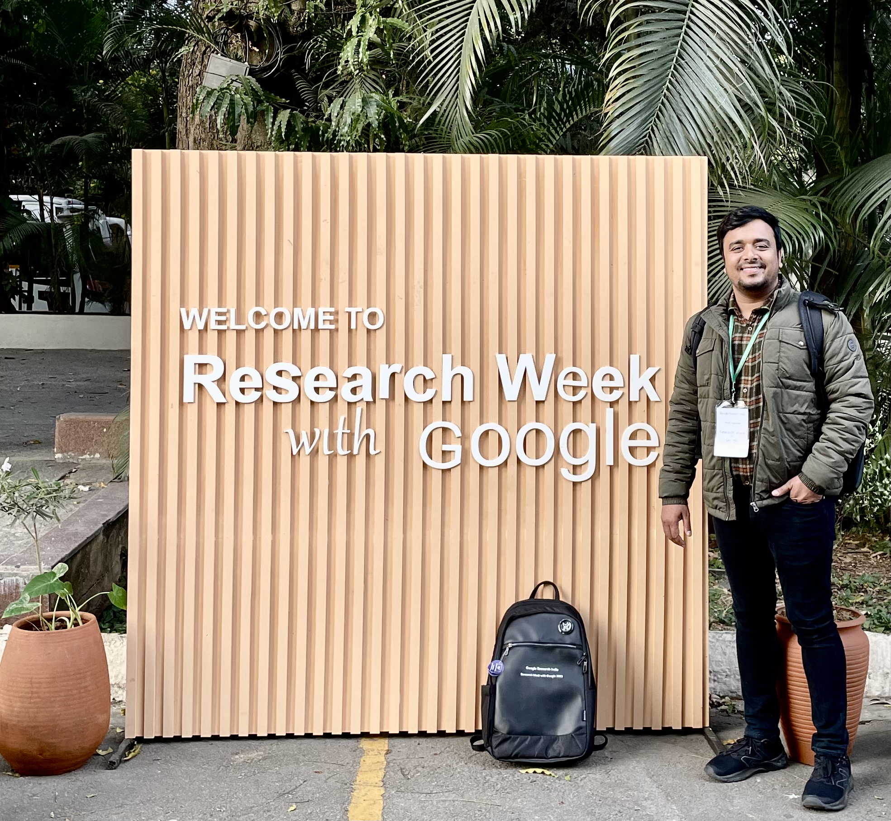
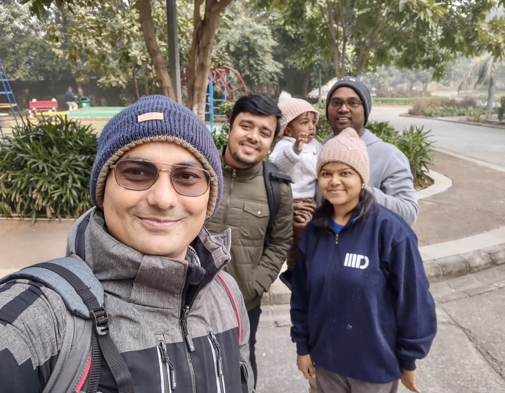
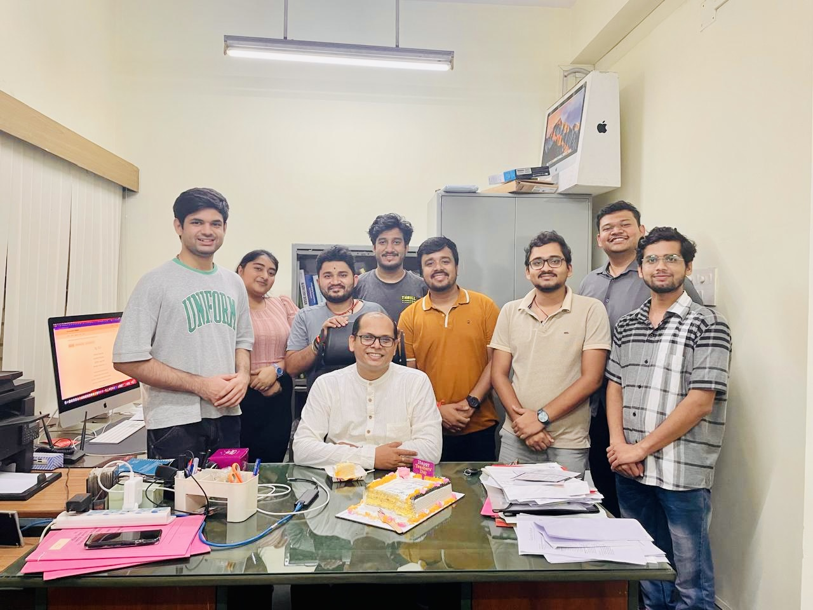
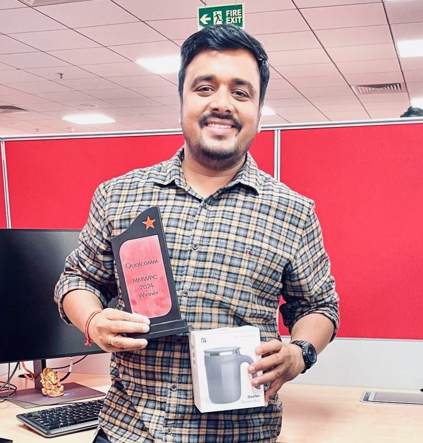